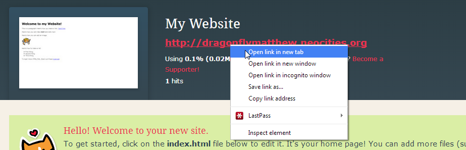
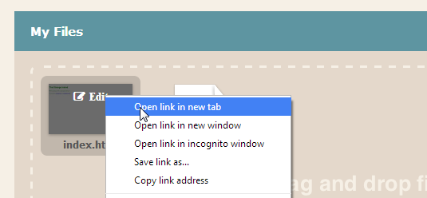
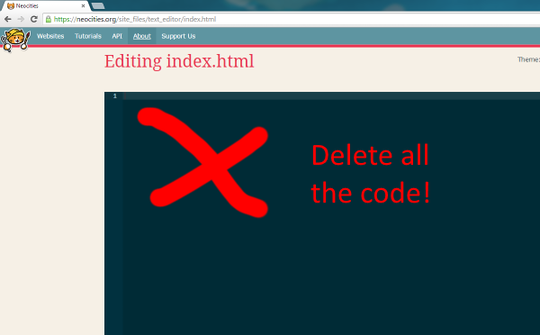
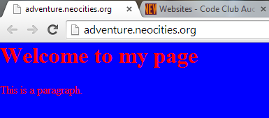

Webpages
We're going to put a new web page on the internet.
Example: Gargoyles fan page.
Example: To infinity and Beyond.
There are two steps: we set up an example page, then you add your own content.
Let's go!
Make a Neocities account
- Go to neocities.org
- Under 'Get Started Now', type in a name for your site and click 'Get Started'
- Fill out the form to create your account. We are using the free option.
- Once you finish you will see a page that says 'My Website' at the top center.
Delete some files
This is the Neocities dashboard. You can hold your mouse over a file and choose 'edit' or 'delete'.
- Delete cat.png and not_found.html. We do need those!
- You now have only 1 file: index.html.
Editing
I like to work with two tabs open.
Tab 1: Open your website in a new tab by right-clicking on the big red link under 'My Website' and choosing 'Open link in new tab'.
This tab is where you will check how your page looks.
Right now, your page will be a white page with some instructions on it. You can ignore those instructions. We are going to delete them in a moment.
Tab 2: Back on the Neocities dashboard, Hold your mouse over index.html and the word 'edit' appears. Right click and open in a new tab.
This opens a tab that says 'Editing index.html' at the top. This is where you can change your page.

Now you have two tabs that you will use: One to look at your site, and one to edit your site.
Replace the HTML
Go to the tab for index.html
Delete everything in the blue area until it's empty. That's right, delete all the code until it's an empty grey box!
Then paste this in instead:
<!DOCTYPE html>
<html>
<head>
<style>
body {
color: red;
background-color: blue;
}
</style>
</head>
<body>
<h1>Welcome to my page</h1>
<p>This is a paragraph.</p>
</body>
</html>
Click 'save changes' to save. (You might have to scroll down. It's the big red button in the middle.)

Now switch to the tab that shows your website. Refresh the page and you should see your changes appear.
It should look like this.
Congratulations! You have made a beautiful website! Well, kind of.
Maybe you want to change it a little... click through to part two.